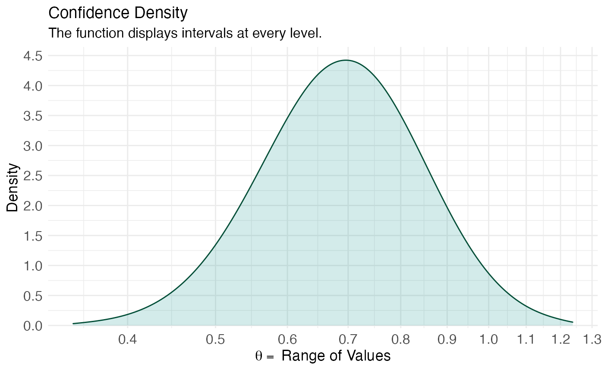

Suppose we wanted to produce confidence distributions for data with binary outcomes and where we employ a logistic regression, we would do the following. Here, I use the mtcars dataset for the example and also simulate some very simple binary data. We use suppressMessages() to avoid seeing the long list of profiling messages.
## Please see the documentation on https://data.lesslikely.com/concurve/ or by typing `help(concurve)`X <- rnorm(100, mean = 0, sd = 1) Y <- rbinom(n = 100, size = 1, prob = 0.5) mydata1 <- data.frame(X, Y) model1 <- glm(Y ~ X, data = mydata1, family = binomial(link = "logit")) model2 <- glm(am ~ mpg, family = binomial(link = "logit"), data = mtcars) summary(model1)
##
## Call:
## glm(formula = Y ~ X, family = binomial(link = "logit"), data = mydata1)
##
## Deviance Residuals:
## Min 1Q Median 3Q Max
## -1.186 -1.130 -1.085 1.228 1.291
##
## Coefficients:
## Estimate Std. Error z value Pr(>|z|)
## (Intercept) -0.11357 0.20156 -0.563 0.573
## X -0.06099 0.19879 -0.307 0.759
##
## (Dispersion parameter for binomial family taken to be 1)
##
## Null deviance: 138.27 on 99 degrees of freedom
## Residual deviance: 138.17 on 98 degrees of freedom
## AIC: 142.17
##
## Number of Fisher Scoring iterations: 3summary(model2)
##
## Call:
## glm(formula = am ~ mpg, family = binomial(link = "logit"), data = mtcars)
##
## Deviance Residuals:
## Min 1Q Median 3Q Max
## -1.5701 -0.7531 -0.4245 0.5866 2.0617
##
## Coefficients:
## Estimate Std. Error z value Pr(>|z|)
## (Intercept) -6.6035 2.3514 -2.808 0.00498 **
## mpg 0.3070 0.1148 2.673 0.00751 **
## ---
## Signif. codes: 0 '***' 0.001 '**' 0.01 '*' 0.05 '.' 0.1 ' ' 1
##
## (Dispersion parameter for binomial family taken to be 1)
##
## Null deviance: 43.230 on 31 degrees of freedom
## Residual deviance: 29.675 on 30 degrees of freedom
## AIC: 33.675
##
## Number of Fisher Scoring iterations: 5model_pro <- suppressMessages(curve_gen( model = model1, var = "X", method = "glm", log = T, steps = 1000, table = TRUE)) model_con <- suppressMessages(curve_gen( model = model2, var = "mpg", method = "glm", log = T, steps = 1000, table = TRUE)) head(model_con[[1]], 10)
## lower.limit upper.limit intrvl.width intrvl.level cdf pvalue svalue
## 1 1.359192 1.359581 0.0003887775 0.001 0.5005 0.999 0.001443417
## 2 1.358998 1.359776 0.0007775530 0.002 0.5010 0.998 0.002888279
## 3 1.358804 1.359970 0.0011663270 0.003 0.5015 0.997 0.004334590
## 4 1.358609 1.360164 0.0015551002 0.004 0.5020 0.996 0.005782353
## 5 1.358415 1.360359 0.0019438731 0.005 0.5025 0.995 0.007231569
## 6 1.358221 1.360556 0.0023349563 0.006 0.5030 0.994 0.008682243
## 7 1.358027 1.360754 0.0027268373 0.007 0.5035 0.993 0.010134377
## 8 1.357833 1.360951 0.0031187240 0.008 0.5040 0.992 0.011587974
## 9 1.357638 1.361149 0.0035106173 0.009 0.5045 0.991 0.013043037
## 10 1.357444 1.361347 0.0039025176 0.010 0.5050 0.990 0.014499570(ggcurve(model_con[[1]], measure = "ratio", type = "c", nullvalue = c(0.8, 1.2), title = "Confidence Curve", subtitle = "The function displays intervals at every level.", xaxis = expression(theta == ~"Range of Values"), yaxis1 = expression(paste(italic(p), "-value")), yaxis2 = "Levels for CI (%)"))

(ggcurve(model_pro[[1]], measure = "ratio", type = "c", nullvalue = c(0.8, 1.2), title = "Confidence Curve", subtitle = "The function displays intervals at every level.", xaxis = expression(theta == ~"Range of Values"), yaxis1 = expression(paste(italic(p), "-value")), yaxis2 = "Levels for CI (%)"))

(ggcurve(model_con[[2]], measure = "ratio", type = "cdf", nullvalue = c(0.8, 1.2), title = "Confidence Distribution", subtitle = "The function displays intervals at every level.", xaxis = expression(theta == ~"Range of Values"), yaxis1 = expression(paste(italic(p), "-value")), yaxis2 = "Levels for CI (%)"))

(ggcurve(model_pro[[2]], measure = "ratio", type = "cdf", nullvalue = c(0.8, 1.2), title = "Confidence Distribution", subtitle = "The function displays intervals at every level.", xaxis = expression(theta == ~"Range of Values"), yaxis1 = expression(paste(italic(p), "-value")), yaxis2 = "Levels for CI (%)"))

(ggcurve(model_con[[2]], measure = "ratio", type = "cd", nullvalue = NULL, title = "Confidence Density", subtitle = "The function displays intervals at every level.", xaxis = expression(theta == ~"Range of Values"), yaxis1 = expression(paste(italic(p), "-value")), yaxis2 = "Levels for CI (%)"))

(ggcurve(model_pro[[2]], measure = "ratio", type = "cd", nullvalue = NULL, title = "Confidence Density", subtitle = "The function displays intervals at every level.", xaxis = expression(theta == ~"Range of Values"), yaxis1 = expression(paste(italic(p), "-value")), yaxis2 = "Levels for CI (%)"))

Cite R Packages
Please remember to cite the R packages that you use in your work.
citation("concurve")
##
## Rafi Z, Vigotsky A (2020). _concurve: Computes and Plots Compatibility
## (Confidence) Intervals, P-Values, S-Values, & Likelihood Intervals to
## Form Consonance, Surprisal, & Likelihood Functions_. R package version
## 2.7.6, <URL: https://CRAN.R-project.org/package=concurve>.
##
## Rafi Z, Greenland S (2020). _Semantic and Cognitive Tools to Aid
## Statistical Science: Replace Confidence and Significance by
## Compatibility and Surprise_, series Technical Advance. <URL:
## https://doi.org/10.1186/s12874-020-01105-9>.
##
## To see these entries in BibTeX format, use 'print(<citation>,
## bibtex=TRUE)', 'toBibtex(.)', or set
## 'options(citation.bibtex.max=999)'.citation("cowplot")
##
## To cite package 'cowplot' in publications use:
##
## Claus O. Wilke (2020). cowplot: Streamlined Plot Theme and Plot
## Annotations for 'ggplot2'. R package version 1.1.0.
## https://CRAN.R-project.org/package=cowplot
##
## A BibTeX entry for LaTeX users is
##
## @Manual{,
## title = {cowplot: Streamlined Plot Theme and Plot Annotations for 'ggplot2'},
## author = {Claus O. Wilke},
## year = {2020},
## note = {R package version 1.1.0},
## url = {https://CRAN.R-project.org/package=cowplot},
## }